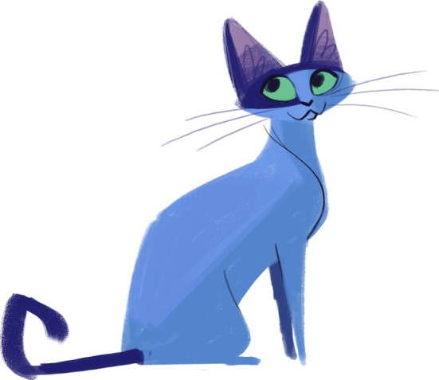

Cores são simplesmente como seus olhos interpretam a luz refletida ou emitida de algum lugar.
Logo, cores são a mesma coisa, mas em uma frequência distinta, e isso faz com que nenhuma faça algo
em especial. Assim, concluimos que a superioridade das cores vem só de sua capacidade para sua
usada tanto para embelezar algo, tanto para sua funcionalidade em obras, o mais distintas que sejam.

Agora, vamos direto para o assunto. Eu acredito totalmente que o azul é uma das melhores cores,
se não a melhor. Mas isso não se dá só porque ela é minha favorita, ou algo do tipo (inclusive não é),
mas sim por sua capacidade de criar diversas cores boas do mesmo. Não só isso, mas o azul é uma
das 3 cores do RGB, que compõem todas as cores do mesmo.
Apesar do azul ser a melhor cor, você talvez não seja o maior fã da mesma. Neste caso, existem outras cores
que são também aceitáveis para este título. Das mesmas, você pode dizer: Vermelho e Verde, que também
fazem parte do RGB, e o preto, que funciona na tonalidade de todas as cores e é a ausência da luz em si!